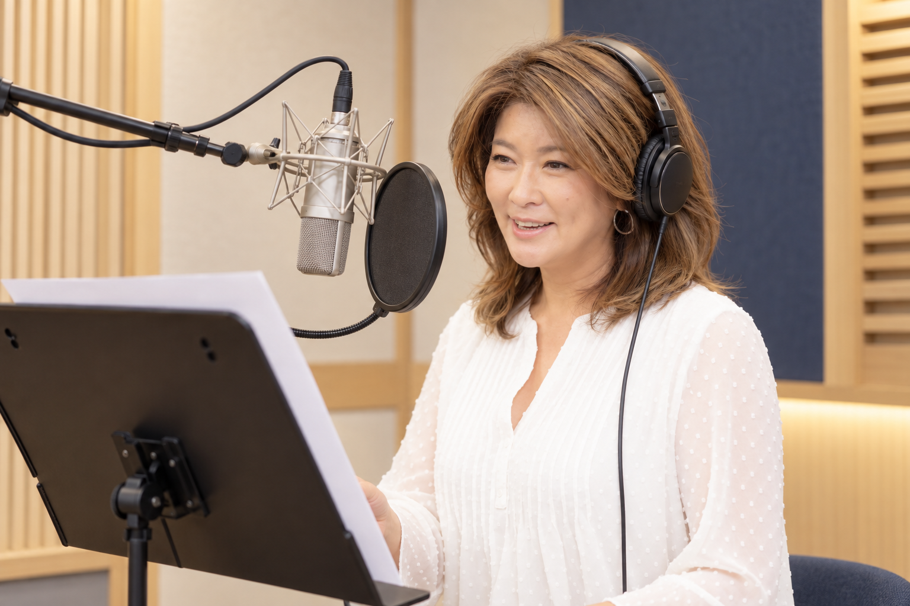

VOICE WORK & TRAINING
声と言葉で
企画を届ける
インタビュー・司会・ナレーション、講演・研修。
目的や届けたい相手から、ご相談ください。

全国への出張・オンライン対応が可能です。ご希望の場所や形式をご相談ください。
01 / INTERVIEW
その人の言葉を
聞いて届ける
インタビューの内容と料金目安
経営者・監督・選手・リーダーなどへのインタビュー。目的に合わせた事前設計・質問作成から、当日の聞き手・進行までご相談いただけます。
- 料金目安
- 1回5万〜10万円＋編集代
- 納品の目安
- 事前準備から納品まで約1週間。映像・動画など、用途に合わせてご相談ください。
7月21日の聞き取りに基づく目安です。税込・税別、収録時間、撮影・編集の担当範囲と最終料金は、ご依頼内容に合わせて確認します。
インタビューを通じて、人や会社の想いを動画で届けます。経営者・社員の紹介、会社や事業の紹介、スポーツ選手への取材など、目的に合わせてご相談ください。
プロスポーツ選手などへのインタビュー経験があります。
撮影・編集を含む担当範囲や納品内容は、ご相談時に確認します。
- ご相談の入口
- 経営者・社員の紹介、会社や事業の紹介、スポーツ選手への取材
- 分かると助かること
- 取材する相手、伝えたい内容、掲載先、希望時期
- 確認する条件
- 聞き手の担当範囲、撮影・編集体制、費用とスケジュール
02 / MC
出会う場を
声でつなぐ

イベントの司会・MC。その場の目的と参加する方に合う進め方を相談します。
- 分かると助かること
- 催事の内容、日時、場所、参加者、進行案の有無
- 確認する条件
- 打ち合わせ、本番の担当範囲、費用とスケジュール
03 / NARRATION
届ける内容に
ふさわしい声を

映像や原稿に合わせたナレーション。用途、長さの目安、希望する雰囲気からご相談ください。
ボイスサンプルは掲載準備中です
音声を確認したい方は、ご相談時にお知らせください。この草案には再生できる音源を掲載していません。
- 分かると助かること
- 用途、原稿の状況、長さ、希望納期
- 確認する条件
- 収録方法、納品形式、使用範囲、修正条件と費用
04 / TALKS & TRAINING
話す 聞く 伝えるを
学びの時間に

インタビューや司会の経験を活かした、聞き方・伝え方の講演・研修。テーマや対象に合わせて、内容をご相談いただけます。
具体的なテーマや事例は、確認してからご案内します。
- 分かると助かること
- 対象者、参加人数、テーマ、希望時期・時間、開催形式
- 確認する条件
- テーマの適合、具体的な内容、担当範囲と費用
HOW TO REQUEST
目的から
条件を一緒に整理する
- ご相談
内容・用途・希望時期をお知らせください。未定の項目は、未定とお書きください。
- 内容と条件の確認
担当する範囲、進め方、費用、スケジュールを確認します。
- 正式なご依頼へ
内容と条件を確認したうえで、正式なご依頼へ進めます。
SERVICE DETAILS
時間・回数・料金を
確認してから
サービス条件 · 中願寺さん確認後に掲載
ここに各サービスの条件が入ります
インタビュー／司会・MC／ナレーション／講演・研修について、内容・形式・時間・回数・料金・含まれる作業・追加費用・納品物を整理します。コーチングなどの条件は、それぞれの紹介欄に反映します。
料金の掲載範囲やお見積もりの方法は、本人への確認後に決めます。
LET’S TALK
企画の途中から
お聞かせください
何を届けたいか、いつごろを考えているか。
いま分かることから、お知らせください。